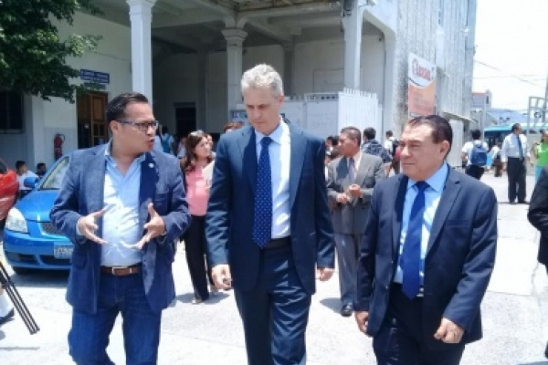

Organización
La manera en la que el Instituto esta organizado es de una manera jerarquica, con entes que tienen sus areas destinadas, empezando con la persona a la cabeza; el director, seguido por los demás entes como lo son: Dirección academica, secretaria, pastoral, los maestros tanto academicos como tecnicos, etc.

Director
El director de nuestra querida institución es el Lic. William Lemus, en el recaen todas las decisiones importantes en el colegio, así como recae la responsabilidad de dar ordenes a los demás entes y a los profesores. Un ejemplo claro de su importancia es en la actualidad que vivimos con una pandemia el analiza la situacion para saber si todos esos eventos caracteristicos de el Instituto se realizaran.
Los entes importantes
- Dirección Academica
Este ente es el intermediario entre el director y sus ordenes y los profesores, son los que determinan horarios tanto de clases como de examenes, modalidades para las clases, los que proveen de indicaciones por parte del MINED hacia toda la institución.
- Secretaria
Es el enter encargado de la mayoria de papeleria que el colegio tiene, también es el ente encargado de dar información para nuevo ingreso, etc.
- Pastoral
Este ente como su nombre ya nos puede indicar es el encargado de las actividades religiosas del colegio, misas importantes, los que proveen de los evangelios y lecturas diarias y los retiros que realizan todos los alumnos del instituto.